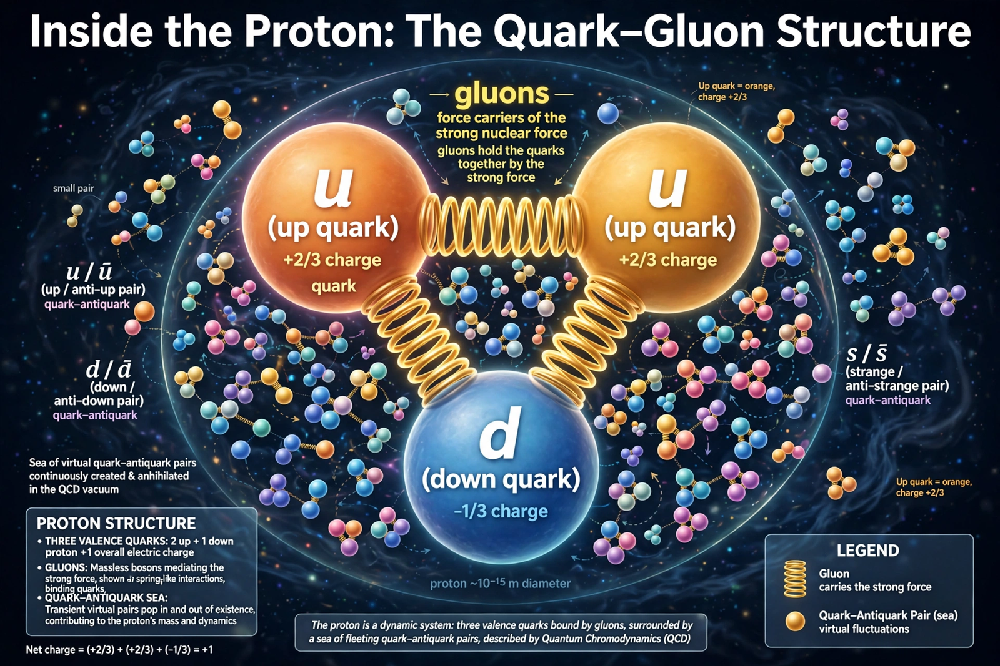

Quantum chromodynamics
| Interaction | Strong nuclear force |
|---|---|
| Gauge group | SU(3) |
| Mediators | 8 gluons |
| Key figures | Murray Gell-Mann, David Gross, Frank Wilczek, David Politzer |

[Image: Proton structure diagram: three valence quarks bound by a sea of gluons and quark–antiquark pairs]In theoretical physics, quantum chromodynamics (QCD) is the study of the strong interaction between quarks mediated by gluons, the fundamental particles making up protons, neutrons and other composite particles. QCD is a type of Quantum field theory called a non-Abelian gauge theory — the SU(3) gauge group governs its dynamics.
Two peculiar properties define QCD: colour confinement — quarks and gluons are never observed in isolation but only inside colour-neutral hadrons — and asymptotic freedom — the interaction weakens at short distances and high energies, permitting perturbative calculations there. Asymptotic freedom was discovered in 1973 by David Gross and Frank Wilczek and independently by David Politzer, earning them the 2004 Nobel Prize in Physics.
Colour charge and history
The colour degree of freedom was introduced in the mid-1960s (by Oscar Greenberg, and by Han and Nambu) to reconcile the quark model with the Pauli principle, and developed into a full gauge theory by Murray Gell-Mann with Harald Fritzsch and Heinrich Leutwyler in 1972–73. Evidence accumulated from deep inelastic scattering at SLAC (showing point-like constituents inside the proton), the November Revolution of 1974 (discovery of the J/ψ), and three-jet events at PETRA (1979) directly indicating the gluon.
Confinement and the strong coupling
Unlike the photon, gluons themselves carry colour charge and interact with each other, so the potential between quarks grows roughly linearly with distance: pulling quarks apart stores enough energy to create new quark–antiquark pairs (hadronisation into jets) rather than freeing them. At distances below ~0.1 fm the coupling becomes small and quarks behave almost freely. Non-perturbative regimes are studied numerically with lattice QCD, which computes hadron masses from first principles to percent accuracy.
The QCD vacuum and phases
At extreme temperature or density — as in the early universe microseconds after the Big Bang, or in neutron-star cores — hadrons melt into a quark–gluon plasma, created in heavy-ion collisions at RHIC and the Large Hadron Collider. Chiral symmetry breaking in the QCD vacuum gives pions their small masses and generates most of the mass of ordinary matter: the proton's mass comes overwhelmingly from QCD binding energy, not from the Higgs mechanism.